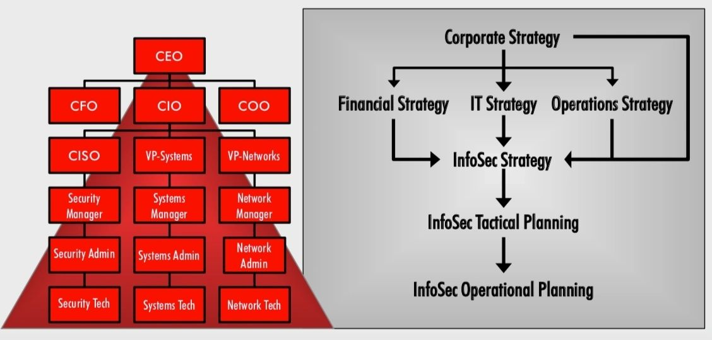
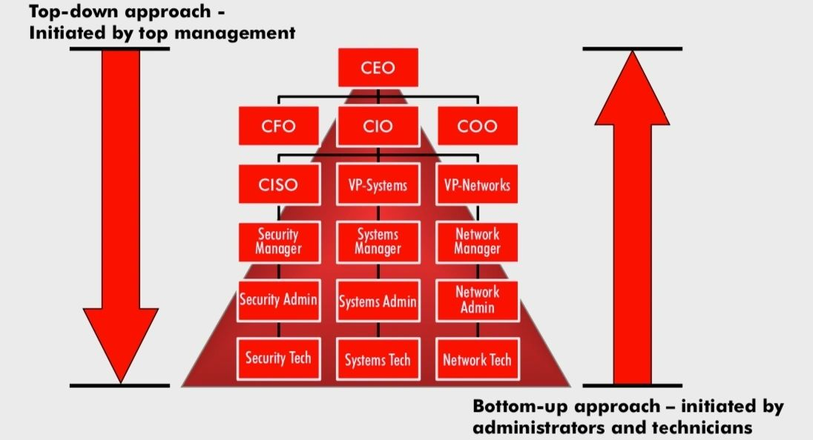
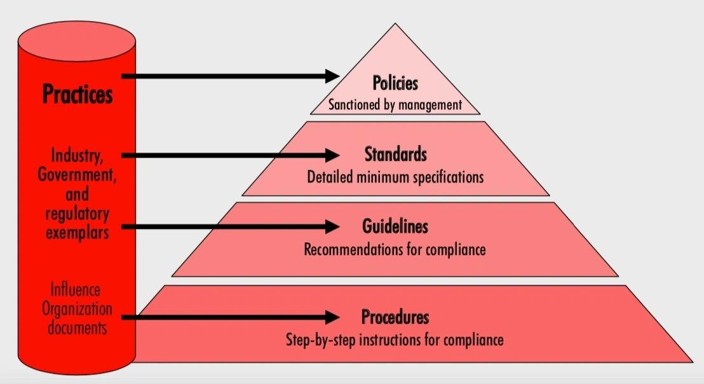
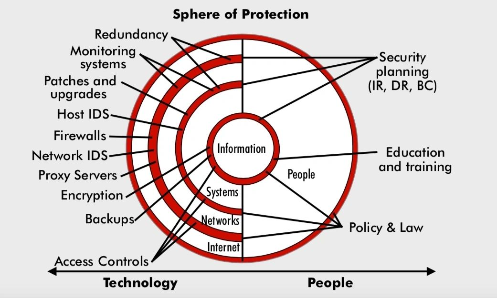
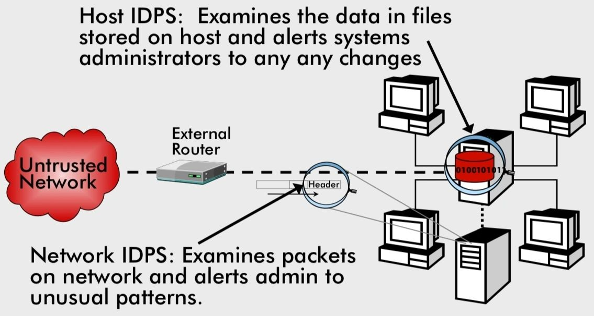

Information Security Policy Formulation and Protection Mechanisms
As long as humans communicate there is going to be a need for information security. A rather difficult subject for engineers to consume, it is still inevitable for a professional or a student to know the basics of this subject due to its criticality in terms of management of small or large enterprises, or programs. This is something that I have practically experienced in past companies and understand what role it has in the success of individuals and organizations. Internal and external threats to the information that is generated and stored by various workers must be identified, categorized and the resolutions laid out as what has been termed as the 6 Ps of InfoSec :
1. Planning
2. Policy
3. Programs
4. Protection
5. People
6. Project Management
Each of them is important in its own right, but to focus on the major tangible building blocks, I have written more about the Policy and Protection mechanisms. It will give readers a mix of governance, policy-making and computer science and engineering knowledge involved in protecting information in almost every kind of public or private institution.
The planning phase can be broken down phases for mission/vision/value statements and categorization like types of planning - strategic, operational and technical, infosec governance, important roles like the CISO, top-down or bottom-up approach for organization-wide implementation and more.


What is a policy? It is a statement of the organization’s position that is intended to influence and determine important decisions. A policy may be viewed as a set of rules dictating acceptable & unacceptable behavior within an organization. Policies must contain information on what is required and what is prohibited, on penalties for violating policy, and on the appeals process. For it to be effective, it must be properly written, distributed, read, understood, agreed to, and uniformly applied to those for whom it is intended. End-users of info systems should be involved in the steps of policy formulation. A quality InfoSec program begins and ends with policy. Policy drives the performance of personnel in ways that enhance the InfoSec of an organization’s information assets. Developing proper guidelines for an InfoSec program is a management problem, not a technical one. InfoSec policies are the least expensive means of control, but they are often the most difficult to implement.
Management must define three types of InfoSec policies:
Enterprise information security program policy
Issue-specific information security policies - for the protection of intellectual properties.
System-specific information security policies - for protection of data and other company assets.
For policy-centric decision making, there is a Bull’s eye model of 4 layers
Policies: the first layer of defense
Networks: threats first meet the organization’s network
Systems: computers and manufacturing systems
Applications: all applications systems
Policies are at the top of all administration laws as shown in this figure:

An important document for any company or organization is the Enterprise Information Security Policy (EISP) which is an overview of corporate philosophy on security, information about information security organization and roles, responsibilities for security shared by all members of the organization, responsibilities for security shared by all members of the organization.
System specifications include defining password rules, ACLs, network traffic rules, etc. is a combination of managerial and technical understanding of the business or organization.
Guidelines for developing them include understanding industry-accepted practices, acceptance by employees or partners, uniformly applied and enforced, and distributed or disseminated using all appropriate methods.
It is often useful to view policy development as a three-part project:
Design and develop policy (or redesign and rewrite outdated policy)
Senior manager or executive at the appropriate level reviews and formally approves the document
Establish management processes to perpetuate policy within the organization.
The SecSDLC methodology of project development can be applied to develop and implement a sec policy that may follow a Waterfall model but it is always desirable to keep iterating it as new projects are taken up and user requirements and trends in information exchange change over time.
This is followed by distribution, design, implementation, investigation, observation and enforcement phases.

This is the technical part of information security that involves some core computer science and engineering concepts and implementations at the physical (access and assets), data, and software levels for a software company. These include:
1. access control approaches, including authentication, authorization, and biometric access controls
2. various types of firewalls and the common approaches to firewall implementation
3. dial-up access and protection, Scanning and analysis tools
4. intrusion detection and prevention, systems, and the strategies on which they are based
5. Implementation of network defense measures
6. cryptography and encryption - describe the application of cryptography in SSL, virtual private networks, secure storage, and other security applications.
This consists of Authentication mechanisms - with a physical ID, something the user knows, has or can produce. Passwords of a traditional kind are still in use, however, there is an increasing need for paraphrases that are longer than a password and something that "holds" the password.
Biometrics is the new way of authorization and authentication and that also makes the user experience better. For instance, biometric-based boarding passes at an airport or for a faster visa clearance process. With the coming of quantum computing, quantum cryptography will perhaps make normal digital password protection ineffective and irrelevant.
The 4 generations of Firewall protection have evolved over the years and prevent a specific type of information from moving between two networks. The fourth-generation firewall is for dynamic packet filtering:
1. Allows only a particular packet with a specific source, destination, and port address to pass through the firewall
2. Understands how the protocol functions and opens and closes pathways in the firewall
3. An intermediate form between traditional static packet filters & application proxies
The term intrusion detection/ prevention system (IDPS) can be used to describe current anti-intrusion technologies, can detect an intrusion, can also prevent that intrusion from successfully attacking the organization by means of an active response. They work like alarms that can be configured to have levels. IDPSs are either network-based to protect network information assets, or host-based to protect server or host information assets.
Use one of two detection methods:
Signature-based
Statistical anomaly-based
Host-based IDPS works by configuring and classifying various categories of systems and data files.
Network-based IDPS monitor network traffic and, when a predefined condition occurs, notify appropriate administrator, look for patterns of network traffic, match known and unknown attack strategies against their knowledge base to determine whether an attack has occurred.
Signature-based IDPS examines data traffic for something that matches preconfigured, predetermined attack patterns. Problem: signatures must be continually updated, as new attack strategies emerge
Anomaly-Based IDPS first collects data from normal traffic and establishes a baseline
Then periodically samples network activity, based on statistical methods
Compares samples to baseline

Wireless Networking Protection
Most organizations using wireless networks use an implementation based on the IEEE 802.11 protocol
Size of a wireless network’s footprint
Depends on the amount of power the transmitter/receiver wireless access points (WAP) emit
Sufficient power must exist to ensure quality connections within the intended area but not allow those outside the footprint to connect
Wardriving
Moving through a geographic area or building, actively scanning for open or unsecured WAPs
Common encryption protocols used to secure wireless networks
Wired Equivalent Privacy (WEP)
Wi-Fi Protected Access (WPA)
Scanning and Analysis tools can find vulnerabilities in systems, holes in security components, and other unsecured aspects of the network. Similarly, port scanners, packet sniffers, vulnerability scanners, traps and traces for software are used to detect suspicious exchange and leakage of information from the internal networks.
Logs are a vital part of server management.
Some systems are configured to record a common set of data by default; other systems must be configured to be activated. Some systems are configured to record a common set of data by default; other systems must be configured to be activated. To protect log data, you must ensure that the servers that create and store the logs are secure.
According to NIST, log management infrastructure involves two tiers, each with its own subtasks:
log generation
log analysis and storage
Cryptography and Cryptoanalysis is an age-old concept present as Symmetric, Asymmetric encryption, public key infrastructure, digital signatures, etc. But the more interesting development is that of the hybrid cryptosystems.
Hybrid process in current use based on the Diffie-Hellman key exchange method
Provides a method to exchange private keys using public-key encryption without exposure to any third parties
Asymmetric encryption is used to exchange symmetric keys so two parties can conduct quick, efficient, secure communications based on symmetric encryption
Diffie-Hellman provided the foundation for subsequent developments in public-key encryption
Email security remains a challenge to date. The same goes for the internet as a whole.
IPSec and other cryptographic extensions to TCP/IP are often used to support a virtual private network (VPN), a private, secure network operated over a public and insecure network.
Primary and dominant cryptographic authentication and encryption product of IETF’s IP Protocol Security Working Group.
IPSec combines several different cryptosystems:
1. Diffie-Hellman key exchange for deriving key material between peers on a public network 2. Public key cryptography for signing key exchanges to guarantee the identity of the two parties
3. Bulk encryption algorithms, such as DES, for encrypting the data
4. Certificates signed by a CA as digital ID cards

HTTPS, SSL, SSH, and other protocols attempt to save information from being hacked over the internet and public networks.
Kerberos system knows private keys and can authenticate one network node (client or server) to another. Kerberos also generates temporary session keys—that is, private keys were given to the two parties in conversation Security protocols and the cryptosystems they use are installed and configured by humans, and thus they are only as good as their installers. As with all other information security program components, make sure that your organization’s use of cryptography is based on a well-constructed policy and supported by sound management procedures.